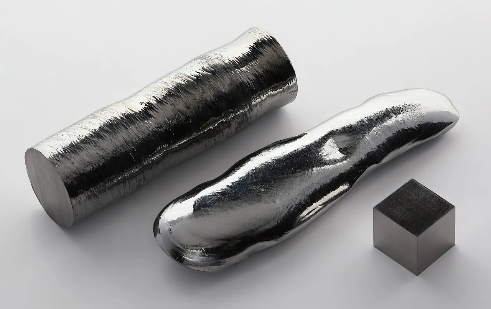
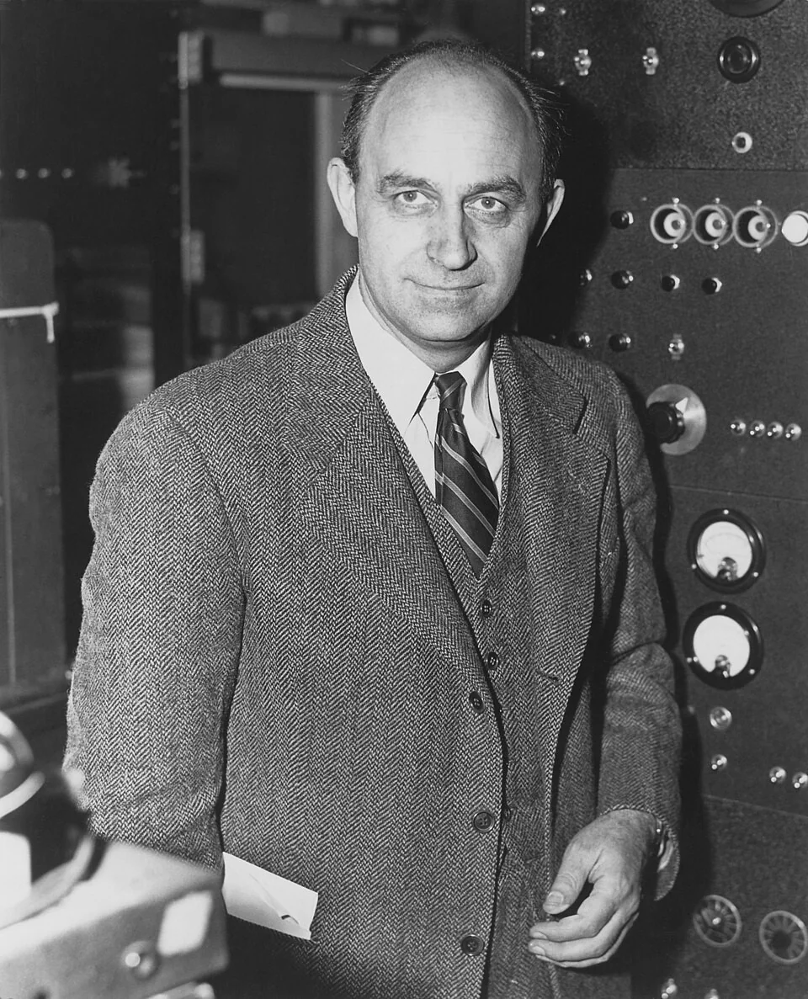
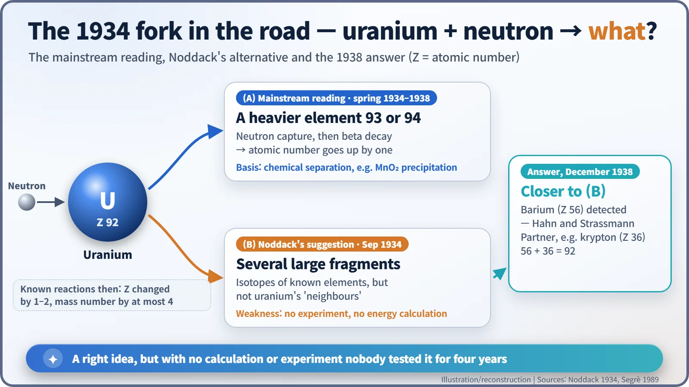
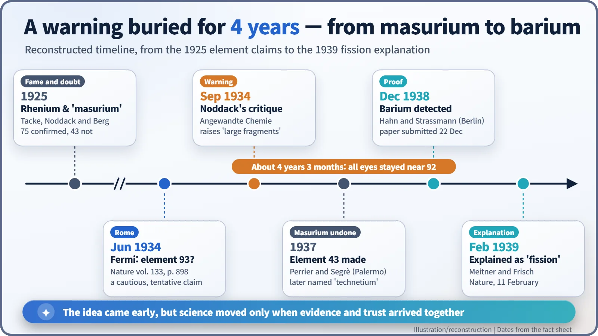

Nuclear History · 055
One Sentence, Four Years Early — Ida Noddack and the First Hint of Nuclear Fission (1934)
Ida Noddack spotted the gap in Fermi's element 93 claim and imagined nuclei breaking apart, but without an experiment or a calculation her idea waited four years.
In September 1934 the German chemist Ida Noddack challenged Enrico Fermi's claim to have made element 93 and suggested, in a single sentence, that a heavy nucleus hit by neutrons might break into several large fragments. Nobody tested the idea for more than four years. Her suggestion came without an experiment or a calculation, it clashed with what physicists then believed about nuclear reactions, and her unconfirmed "masurium" claim may have dented her credibility.
One sentence, four years early
"It would be conceivable that when heavy nuclei are bombarded with neutrons, these nuclei break up into several large fragments."
That sentence (our English translation of the German original) appeared in September 1934 in a three-page paper in the German journal Angewandte Chemie. Today we call what it describes nuclear fission. Yet for more than four years almost nobody followed the path it pointed to. Its author was the chemist Ida Noddack (1896–1978). Why was a correct idea left lying on the table? The honest answer is more complicated than either "she was ignored because she was a woman" or "it was just a lucky guess". [1] [3]
A husband-and-wife team of element hunters
Born Ida Tacke, she entered the Technical University in Berlin in 1915 and earned a doctorate in engineering in 1921, at a time when women chemists were still rare. At the Physikalisch-Technische Reichsanstalt in Berlin she met the chemist Walter Noddack, whom she married in 1926. Together they set out to fill the remaining gaps in the periodic table. [3] [4]
In 1925 the pair, with their colleague Otto Berg, announced that X-ray spectroscopy had revealed elements 75 and 43. Element 75, rhenium, was real: they eventually processed hundreds of kilograms of molybdenum ore to obtain about one gram of the pure element. Element 43, which they called "masurium", was another story. No one could reproduce it. That mixed record would matter later.

A red pen for Rome's "element 93"
In the spring of 1934, Enrico Fermi's group in Rome was bombarding one element after another with neutrons. Uranium produced puzzling new radioactivity. The team first showed that it did not come from any element between lead (82) and uranium (92). Then, in a cautious note in Nature in June 1934, they suggested that it might be a new element heavier than uranium, number 93. At the time every known nuclear reaction shifted the atomic number by only one or two, so this looked like a natural conclusion. [2] [3]

Noddack, an expert in tracking rare elements, took a red pen to that logic. Fermi had ruled out only the elements between lead and uranium, she argued, not the rest of the periodic table. The manganese dioxide precipitation the Rome group relied on could also drag other elements down with it. Then, as one alternative, she added the sentence quoted above, noting that the fragments "would be isotopes of known elements, but not neighbours of the irradiated element" (again our translation). [1] [3]

Why did nobody listen?
The first reason is evidence. Noddack raised a possibility, but she offered neither an experiment to look for the fragments nor a calculation showing that such a split was possible in terms of energy. The model that treats the nucleus like a liquid drop had not yet been developed, so there was little framework for such a calculation. With hindsight her idea looks remarkably far-sighted; to a physicist in 1934 it looked like speculation.
The second reason is credibility. Some historians suggest that the unconfirmed masurium claim cast a shadow over the Noddacks' reputation. Element 43 was only confirmed in 1937, when Carlo Perrier and Emilio Segrè made it artificially; it was later named technetium. There is a further irony: part of what the Rome team had taken for "element 93" was in fact technetium produced by fission. [2] [5]
Some writers also point to the Noddacks' careers in Nazi-era academia, or to prejudice against women scientists. Others reply that Lise Meitner and Marie Curie were highly respected in the same years, so gender was unlikely to be the main factor. No single explanation settles it. According to a story often repeated, Otto Hahn called her idea "absurd", but the source of that remark is unclear.
Segrè, a member of the Rome group, looked back in 1989 with unusual frankness: "Her article was certainly known to us in Rome, to Hahn and Meitner in Berlin and to Joliot and Curie in Paris. If any of us had really grasped its importance, it would have been easy to discover fission in 1935. It is equally astounding that Noddack did not try any experiment herself to check her ideas." [2]
The Rome group, Segrè admitted, had even come close by accident. Looking for short-lived alpha emitters, they covered a uranium sample with thin aluminium foil to block the ordinary alpha particles, and the foil also hid the large pulses that fission fragments would have produced. For more than three years, he wrote, everyone in the field "considered only nuclear reactions that would lead to elements with atomic numbers near 92." [2]
The reply, four years later
In December 1938 Otto Hahn and Fritz Strassmann in Berlin showed that one of the products from uranium was barium, element 56: nowhere near uranium's neighbours, and roughly half its size. In February 1939 Lise Meitner and Otto Frisch explained it as "fission". That year Noddack published a note in a journal reminding readers that she had raised this possibility in 1934, but Hahn never cited her paper. [3]

Ida Noddack did not discover nuclear fission. Nor did she simply get lucky. She found a real gap in a colleague's reasoning and was able to imagine what might lie beyond it. Her story shows that in science an idea is only a starting point: it is accepted when calculation, experiment and trusted evidence arrive with it.